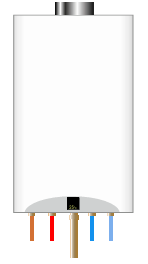
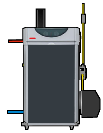
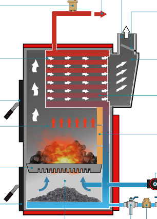
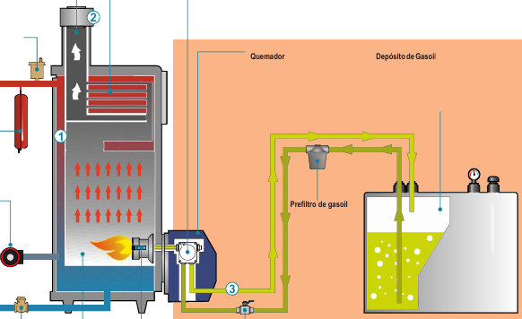
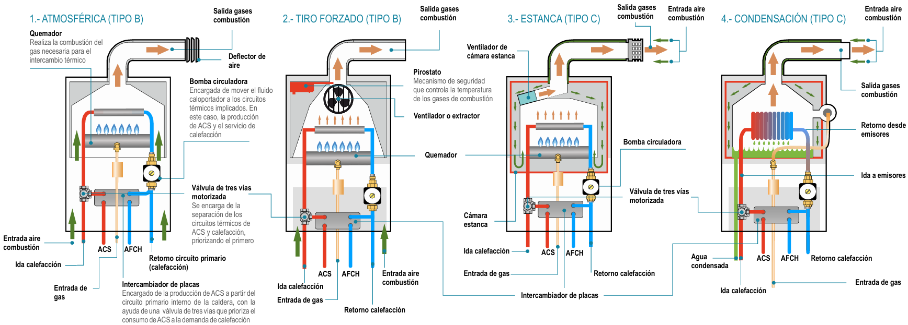
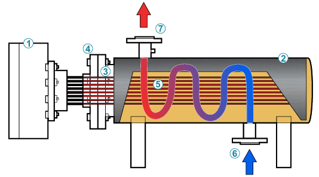
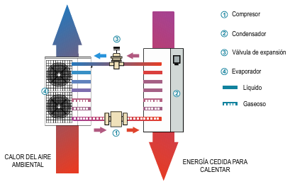
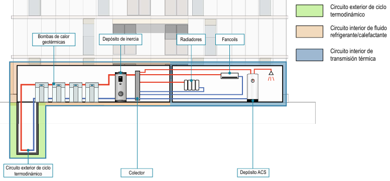
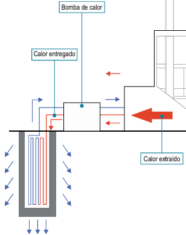
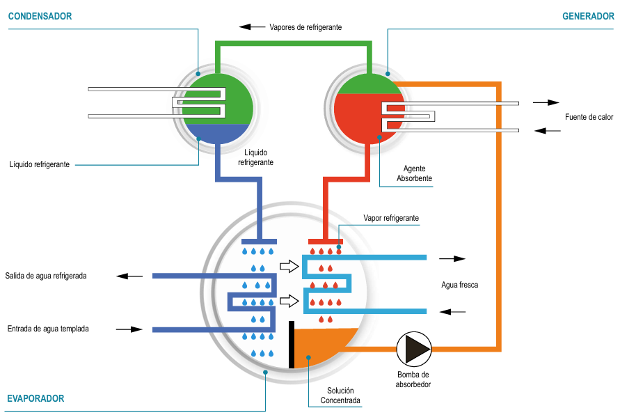

🔥 INTRODUCCIÓN A LOS APARATOS PRODUCTORES DE CALOR
Tema 1 - Generadores de calor para edificios e instalaciones
Calderas
≤70 kW
>70 kW
Individuales
Colectivas
Tema 1
Los aparatos productores de calor generan calor para elevar la temperatura de un fluido térmico. Incluyen calderas, calentadores instantáneos, bombas de calor, acumuladores y sistemas solares térmicos, siendo las calderas los aparatos más utilizados en instalaciones de gran demanda.
Analogía del coche para mejor comprensión
Imaginemos un coche. El motor es el elemento más importante, pero sin ruedas, frenos, suspensión o depósito de combustible no serviría para nada. De igual forma, una caldera necesita otros elementos para funcionar correctamente en un sistema completo.
Definición de Caldera
Equipo generador de calor diseñado para transferir energía térmica a un fluido (generalmente agua) para cubrir demandas de:
Calefacción
Sistemas de radiadores, suelo radiante o fancoils
Agua Caliente Sanitaria (ACS)
Producción de agua caliente para uso doméstico
Otros procesos térmicos
Procesos industriales o aplicaciones especializadas
Esta transferencia de calor puede lograrse mediante combustibles (gas natural, gasóleo, biomasa) o a través de energía eléctrica, geotérmica, aerotermia o renovables.
Clasificación por Potencia según RITE
El Reglamento de Instalaciones Térmicas en los Edificios (RITE) establece una diferenciación crítica basada en la potencia de generación:
Calderas ≤ 70 kW
- Instaladas en interior de viviendas
- Deben ser de tipo C (estancas)
- Consideradas calderas pequeñas
- Analogía: Coches de serie - el usuario elige entre marcas y modelos
Calderas > 70 kW
- Obligatoriamente en cuarto técnico (cuarto de calderas)
- Aparatos mucho más grandes
- Generalmente de tipo B
- Analogía: Solo el "motor" - se diseña un sistema a medida
Calderas Murales Mixtas (≤ 70 kW)
Las más extendidas en viviendas. Vienen de fábrica preparadas para dar servicio tanto al sistema de calefacción como a la producción de ACS.
Características Principales
- Todos los elementos necesarios contenidos en un pequeño espacio
- Incluyen quemadores, elementos de comandado y control
- Suficientes para necesidades de ACS y calefacción de una vivienda

Calderas > 70 kW
No tienen fijado desde fábrica un uso específico (calefacción o ACS). Simplemente son aparatos capaces de transferir calor a un fluido.
Diferencias Clave
- No incorporan elementos auxiliares: vaso de expansión, válvula de 3 vías, válvula de seguridad, bomba de circulación
- Elementos auxiliares deben dimensionarse según la instalación
- Combinaciones y potencias no son predecibles

Procedimiento de Identificación en Intervención
Al acceder a un cuarto de calderas durante una intervención: Imagine que entra en el interior de una caldera mural mixta a gran escala. Esto permitirá identificar todos los componentes que deberían estar presentes.
1
Localizar Calderas
Identificar equipos generadores de fluido térmico
2
Seguir Tuberías
Trazar recorrido de circuitos primario y secundario
3
Identificar Componentes
Localizar todos los elementos del sistema
🌡️ TRANSMISIÓN DE CALOR AL FLUIDO TÉRMICO
Tema 2 - 3 mecanismos + 2 métodos de calentamiento
Conducción
Convección
Radiación
Tema 2
Los aparatos productores de calor aumentan la temperatura del fluido térmico mediante tres mecanismos de transmisión (conducción, convección y radiación) y dos métodos de calentamiento (directo e indirecto). Actúan combinados según el equipo, como en calderas con quemador donde se ven los tres simultáneamente.
2.1 MECANISMOS DE TRANSMISIÓN
Conducción
- Transferencia a través de la materia por contacto directo
- Ejemplos: Depósitos calentadores, resistencias por efecto Joule
Convección
- Transferencia por movimiento de fluidos (líquidos/gases)
- Tipos: Natural (gravedad) o Forzada (mecánica)
- En calderas: Agua por convección forzada (bomba), gases por natural
Radiación
- Transferencia por ondas electromagnéticas sin contacto
- Ejemplos: Sistemas solares, llama en cámara de combustión
- En calderas: Llama calienta intercambiador por radiación
2.2 MÉTODOS DE CALENTAMIENTO
DIRECTO
Fuente → Fluido sin intermediario
Métodos: Combustión, resistencia eléctrica, radiación solar
Ventaja: Más eficiente, sin pérdidas por intercambiador
INDIRECTO
Fuente → Intercambiador → Fluido
Medio intermedio transfiere el calor
Aplicaciones: Calefacción centralizada, procesos industriales
Ejemplo en calderas con quemador
Radiación:
Llama calienta intercambiador por ondas electromagnéticas
Convección:
Agua circula forzada (bomba), gases ascienden naturalmente
Conducción:
Calor se transfiere a través de paredes metálicas al agua
🏭 CALDERAS Y APARATOS PRODUCTORES DE CALOR
Tema 3 - Tipos, clasificaciones y características
Individuales
Colectivas
6 Tipos
Tema 3
Clasificación según dimensiones e instalación:
- Individuales: Responden a demandas de viviendas o locales de un único usuario
- Colectivas: Suministran energía a instalaciones de varios usuarios o grandes demandantes (industrias, colegios, hospitales)
3.1. CLASIFICACIÓN POR COMBUSTIBLE/ENERGÍA
Combustibles Sólidos
Carbón o pellets (biomasa)
Combustibles Líquidos
Gasoil (gasóleo C)
Combustibles Gaseosos
GN (Gas Natural) y GLP (Gas Licuado de Petróleo)
Calderas Eléctricas
Resistencia eléctrica
Bombas de Calor
Aerotérmicas y geotérmicas
Calderas de Absorción
Sistemas de refrigeración por absorción
⛏️ CALDERAS DE COMBUSTIBLE SÓLIDO
Tema 3.2.1 - Carbón y biomasa (pellets)
Carbón
Pellets
Alto CO₂
En retirada
Tema 3.2.1
Primeras calderas utilizadas en calefacción doméstica hace casi un siglo. Actualmente en proceso de retirada gradual por su alto poder contaminante y poca autonomía. Requieren operario para cargar combustible y vaciar cenicero.
CALDERA DE CARBÓN
Características Generales
Fabricación: Elementos de hierro fundido ensamblados
Dos cámaras: Superior (carga/combustión) e Inferior (gasificación/cenizas)
Ubicación: Espacios confinados, mal ventilados, difícil acceso
Almacenamiento: Combustible muy próximo a caldera

Problemas y Características
Alto mantenimiento: Comparado con gasoil, gas o electricidad
Altas emisiones de CO₂: Contaminante principal
Gran espacio necesario: Para almacenamiento de combustibles en seco
Carga diaria: ~250 kg según poder calorífico
Poca autonomía: Requiere recarga frecuente
ESTRUCTURA CALDERA DE CARBÓN
Emparrillado
Piezas metálicas en rejilla que permiten paso de aire y caída de cenizas
Cenicero
Recoge cenizas, regula entrada de aire, con puerta para extracción
Altar
Muro de ladrillo refractario (+30cm) que impide salida de partículas
Conductos de Humo
Circulación de humos/gases calientes, transmiten calor al agua
Cámara de Agua
Parte por donde pasa el agua fría, capta calor de los gases
Caja de Humos
Espacio interior donde se mezclan humos antes de evacuación
Chimenea
Conduce humos al exterior y favorece ventilación
Válvula de Seguridad
Evacua vapor si se supera la presión máxima
Regulador de Tiro
Compuerta que controla flujo de gases y potencia
Puerta de Carga
Pieza metálica con bisagras para introducir combustible
Válvula Antirretorno
Evita que el líquido que circula vuelva atrás
Llaves Llenado/Vaciado
Para llenar y vaciar el circuito
PELLETS (BIOMASA)
¿QUÉ ES EL PELLET? Producto natural catalogado como biomasa sólida, formado por cilindros de pocos milímetros de diámetro elaborados a partir de serrín natural seco comprimido a alta presión. Se utiliza su propia lignina como aglomerante, obteniendo un producto denso y duro con gran poder calorífico.
Funcionamiento de Caldera de Pellets
1
Alimentación: Pellets entran por tolva de almacenamiento (manual o succión)
2
Transporte: Cinta sinfín lleva pellets al quemador según demanda de calor
3
Encendido: Ventilador a bajas revoluciones inicia combustión
4
Combustión: Ventilador aumenta velocidad → antorcha uniforme
5
Control: Quemador totalmente automatizado (regula pellet, aire, temperatura)
Autonomía: Mayor depósito → mayor autonomía. Calderas comunitarias queman ~80 kg por carga según demanda.
⚠️ PROBLEMAS EN INTERVENCIÓN
Corte eléctrico: Combustible sigue ardiendo → ebullición del agua → sobrepresiones que deben controlarse con válvula de seguridad.
Fermentación del pellet: En presencia de humedad genera gas metano. En España mueren 3-6 operarios anualmente por manipulación en silos. Ventilar y usar equipo de respiración autónomo + explosímetro.
Intoxicación por CO: Combustión incompleta por ausencia de comburente. Síntoma: cristal de estufa se oscurece.
Incendio en espacio confinado: Combustión incompleta. Enfriar combustible controlando gases. Apertura controlada de puerta (riesgo de backdraft).
PROCEDIMIENTO DE INTERVENCIÓN
①
Control de acceso: Abrir ligeramente puerta de cámara de combustión. Comprobar que no se genera succión de aire (depresión).
②
Evacuación de gases: Si hay depresión, abrir regulador de tiro totalmente en salida de humos. Esperar evacuación y equilibrio de presión.
③
Extinción: Acceder al hogar para sofocar combustible. Retirar todo el combustible para apagarlo.
⚠️
No aportar agua fría desde exterior: Cambio brusco de temperatura rompería elementos internos del hogar, riesgo de escaldadura por agua en ebullición.
RESUMEN COMPARATIVO
CARBÓN
PELLETS
Estado
En retirada gradual
Estado
Alternativa ecológica
Emisiones CO₂
Altas
Emisiones CO₂
Bajas (biomasa)
Carga diaria
~250 kg
Carga
~80 kg (según demanda)
Autonomía
Baja (carga diaria)
Autonomía
Variable (según depósito)
Riesgo principal
CO, incendio confinado
Riesgo principal
Metano (fermentación), CO
⛽ CALDERAS DE COMBUSTIBLE LÍQUIDO (GASOIL)
Tema 3.2.2 - Gasóleo C para calefacción y ACS
Gasóleo C
Poco eficientes
Numerosas en Madrid
Tema 3.2.2
Utilizan gasóleo C (más parafina que gasóleos tipo A y B para vehículos). Fabricadas en hierro fundido o acero. Requieren salida de humos (chimenea) y espacio para depósito anexo de combustible.
A pesar de ser poco eficientes son muy numerosas en Madrid ya que son económicas y tienen un mantenimiento relativamente sencillo comparado con combustibles sólidos.
FUNCIONAMIENTO
1
Demanda
Caldera se enciende por demanda de energía
2
Succión
Bomba succiona gasoil desde tanque a cámara de combustión
3
Pulverización
Inyector pulveriza gasoil a alta presión
4
Ignición
Electrodos inflaman gasoil con descarga eléctrica
5
Combustión
Llamas controladas a ~300°C calientan agua en serpentín

ESTRUCTURA CALDERA DE GASOIL
Circuito de Humos
Conduce humos a caja de humos y maximiza intercambio de calor
Caja de Humos
Zona donde confluyen humos para enviarlos al exterior
Purgador Automático
Elimina aire acumulado en el sistema
Bomba de Gasoil
Succiona combustible del tanque y lo dosifica al inyector
Depósito de Gasoil
En mismo habitáculo que caldera, distancias mínimas de seguridad
Hogar
Espacio de combustión (~300°C) con serpentín para calentar agua
Circuito Combustible
Depósito → Bomba → Inyector → Quemador
Chimenea
Evacua gases de combustión al exterior
Sistema Hidráulico
Calentamiento instantáneo/acumulación y circulación
OTROS COMBUSTIBLES LÍQUIDOS
⚠️
Fueloil (combustóleo): Hidrocarburo derivado del petróleo muy contaminante, prohibido en muchos países
🔥
Queroseno: Derivado del petróleo, usado en industria para varios equipos
♻️
Aceite vegetal reutilizado: Aceite doméstico usado, reutilizado como combustible
🌿
Biodiesel: Combinación de aceite vegetal y diésel, más ecológico
AVERÍAS COMUNES EN INTERVENCIÓN
FALLO DEL ELECTRODO
Electrodos no emiten chispa → gasoil se insufla durante 4-5 segundos → acumulación de gasoil sin quemar. Si electrodos vuelven a funcionar, puede provocar explosión.
Avería puede rearmarse automáticamente, iniciando ciclos de encendido-inyección-apagado
Resultado: gran cantidad de gasoil sin quemar en hogar de caldera
FALLO DEL INYECTOR
Gasoil no se pulveriza correctamente → no se inflama → acumulación en hogar. Resulta en humo blanco con olor a parafina que sale por salida de humos e inunda cuarto de calderas.
Electrodo emite chispa pero no hay llama sostenida
Alarma de vecinos por humo blanco abundante
SOLUCIÓN EN INTERVENCIÓN
Desconexión del quemador y ventilación del hogar. Apagado desde:
QUEMADOR DE COMBUSTIBLE LÍQUIDO
Característica principal: Necesita que el combustible se someta a presión antes de ser combustionado. Los combustibles líquidos no arden tan fácilmente como los gaseosos.
Presurización: Bomba somete gasoil a alta presión
Atomización: Boquilla con agujero muy pequeño atomiza gasoil, se mezcla con aire (Efecto Venturi)
Inyección: Ventilador introduce mezcla en hogar de la caldera
Ignición: Electrodos del quemador encienden la llama
🔥 CALDERAS DE COMBUSTIBLES GASEOSOS
Tema 3.2.3 - Gas natural, propano, butano y sus tipos
4 Tipos
Estancas
Condensación
Tema 3.2.3
Usan gas natural (instalación receptora del edificio) o propano/butano (botellas individuales o depósitos). Son las calderas mixtas más comunes.
TIPOS DE CALDERAS DE GAS
ATMOSFÉRICAS
Captan oxígeno del aire del recinto
Evacuación por tiro natural con salida monotubular
Deflector para favorecer el efecto Venturi
Llama en contacto con aire de habitación
No se comercializan desde 2010
Susceptibles de intoxicación por CO
Rendimiento 80%
TIRO FORZADO
Ventilador ayuda a evacuación de humos
Favorece aportación de aire para combustión
Cámara de combustión no estanca
También susceptibles de intoxicación por CO
Rendimiento 85-92%
ESTANCAS
Cámara cerrada herméticamente
Toma aire del exterior por salida de humos coaxial
Evacua gases con tiro forzado con ventilador
Mayor seguridad
Rendimiento 85-92%
Bajo Nox reducen la emisión de óxidos de nitrógeno
CONDENSACIÓN
Aprovechan calor latente de gases de combustión
Condensan vapor de agua → recuperan energía
Rendimiento hasta 98%
Gases expulsados a ~55°C (vs 200°C convencionales)
Más eficientes y respetuosas con medio ambiente
Disminuyen un 30% el consumo de combustible
CALDERA DE GAS INDIVIDUAL
PCI vs PCS: Poder Calorífico Inferior (PCI) = energía desprendida en combustión completa. Poder Calorífico Superior (PCS) = PCI + energía por condensación de vapor de agua. Calderas de condensación alcanzan altos rendimientos porque añaden calor latente de condensación.
Caracterizadas por baja emisión de gases contaminantes, bajo mantenimiento y alta eficiencia. Cuentan con numerosos elementos de regulación y control asociados a una válvula automática de corte de gas.

CALDERAS COMUNITARIAS
Sistema centralizado que lleva calefacción y ACS a cada vivienda. No necesita caldera individual por vecino → más seguro y eficiente. Pueden ser de propano (depósito o canalizado) o gas natural (canalizado).
SISTEMA CENTRALIZADO
Una o varias calderas para todo el edificio
Mayor eficiencia y control centralizado
Reducción de riesgos individuales
INSTALACIÓN Y MANTENIMIENTO
Requiere cuarto de calderas adecuado
Mantenimiento profesional periódico
Controles de seguridad más exhaustivos
QUEMADOR DE COMBUSTIBLE GASEOSO
Funciona utilizando combustibles gaseosos de origen natural (gas natural) o artificial (propano, butano, hidrógeno). Los combustibles gaseosos arden con mucha mayor facilidad que los líquidos.
CARACTERÍSTICAS PRINCIPALES
Sin tratamiento previo: No necesita presurización como los líquidos
Ya en estado gaseoso: No requiere conversión líquido-gas
Menos dispositivos de seguridad: Arde en condiciones ambientales
Fácil ignición: Se enciende con chispa eléctrica
FUNCIONAMIENTO
Mezcla: Combustible gaseoso se mezcla directamente con aire
Inyección: Mezcla se introduce en el hogar de la caldera
Ignición: Chispa enciende la llama en condiciones ambientales
Combustión: Llama estable para calentar el intercambiador
TIPOS DE COMBUSTIBLES GASEOSOS
🔥
Gas Natural: Gases combustibles obtenidos naturalmente en formaciones geológicas
⛽
Propano y Butano: Hidrocarburos derivados del petróleo (GLP)
💨
Hidrógeno: Combustible gaseoso obtenido por procedimientos químicos
COMPARATIVA CON QUEMADOR LÍQUIDO
Gas: No necesita presurización previa - más simple
Gas: Arde más fácilmente en condiciones ambientales
Gas: Requiere menos dispositivos de seguridad
PROCEDIMIENTO DE INTERVENCIÓN
ACTUACIÓN DEL CUERPO DE BOMBEROS: Siempre consistirá en la desconexión del aparato y cierre de llave de acometida de gas. En ningún caso efectuaremos el rearme de la válvula automática de corte de gas. El restablecimiento del suministro corresponde siempre, y en cualquier caso, a la empresa mantenedora o suministradora.
1
Desconexión inmediata del aparato
2
Cierre de llave de acometida de gas
3
No rearmar válvula automática de corte de gas
4
Ventilación del espacio si hay sospecha de fugas
5
Restablecimiento solo por empresa autorizada
⚡ CALDERAS ELÉCTRICAS
Tema 3.2.4 - Resistencia eléctrica por efecto Joule
Sin combustión
Sin chimenea
Respetuosas
Alto rendimiento
Tema 3.2.4
Las calderas eléctricas son aparatos de producción de calor que utilizan una resistencia para calentar directamente el agua de la caldera. Pueden ser monofásicas o trifásicas, siendo las primeras las más habituales en las viviendas.
No necesitan quemar combustible → no requieren chimenea → facilitan instalación, ahorran espacio y son más respetuosas con el medio ambiente.
Autónomas
Sin necesidad de que el usuario esté pendiente del llenado y mantenimiento de un depósito de almacenamiento de combustible.
Energía limpia
La electricidad es una energía limpia → calderas respetuosas con el medio ambiente.
Requisito potencia
La vivienda debe tener una potencia eléctrica contratada superior a las necesidades de la caldera.
Coste de utilización: Corresponde al precio del kWh de electricidad.
Resistencia Eléctrica
Función y Características
- Convierte energía eléctrica en calor gracias a su aleación especial
- Soporta temperaturas muy elevadas, del orden de ~1.000°C
- Funcionamiento por efecto Joule: electrones impactan contra el material → resistencia → energía cinética → energía térmica
- Calienta el agua por conducción y convección dentro de la caldera
- Elemento clave para el funcionamiento automático de la caldera
Parámetros Eléctricos Detallados
La corriente eléctrica es un flujo de electrones que al moverse por un conductor deben vencer la resistencia de su movimiento.
1
Paso fluido: Electrones viajan de forma ordenada → baja resistencia
2
Paso estrecho y largo: Electrones se golpean, chocan entre ellos → producción de calor (efecto Joule)
Relaciones Fundamentales
∝
Resistencia ∝ Longitud
+Longitud = +Resistencia
-Longitud = -Resistencia
-Longitud = -Resistencia
∝ 1/
Resistencia ∝ 1/Sección
+Sección = -Resistencia
-Sección = +Resistencia
-Sección = +Resistencia
Calderas Eléctricas De Fluido Térmico
Tipo de caldera eléctrica especial, dirigida a instalaciones comunitarias sensibles como laboratorios o empresas ubicadas en entornos urbanos, así como aquellas en las que el estricto respeto al medio ambiente forme parte de su filosofía.
Procesos de Transición
Renovación de calderas comunitarias de carbón por otras más modernas
Transición hacia energías menos contaminantes (líquidos o gaseosos)
Solución intermedia o definitiva en procesos de mejora energética

Componentes Principales
Caja de conexiones/bornes (1): Desplazada para evitar temperaturas elevadas en la misma
Carcasa cilíndrica (2): Debe estar aislada térmicamente para evitar pérdidas de energía o riesgos de quemaduras
Bridas de unión (3 y 4): Conectan caja de bornes con carcasa
Tubos de entrada/salida (6 y 7): Circulación del fluido térmico
Resistencias (5): Calientan el fluido a su paso
Disposición y Características
Disposición general: Horizontal para evitar altas temperaturas en la caja de bornes
Ventaja horizontal: Facilita manipulación y mantenimiento
Disposición ocasional: Vertical por necesidades de espacio en planta
En disposición vertical: Necesaria mayor separación de la caja de bornes por seguridad
🔄 BOMBAS DE CALOR AEROTÉRMICAS Y GEOTÉRMICAS
Tema 3.2.5 - Transportan calor en lugar de generarlo
4 Fases
Reversibles
Muy eficientes
Climatización anual
Tema 3.2.5
Máquinas térmicas basadas en un proceso que consigue transportar el calor en lugar de generarlo. En invierno, transfieren el calor natural del agua, aire o tierra desde el exterior al interior. En verano enfrían el recinto transfiriendo calor del interior al exterior.
Muy eficientes: transportan más calor que la energía eléctrica que consumen. Las bombas de calor reversibles generan calefacción, refrigeración y ACS consiguiendo climatización perfecta todo el año.
Analogía del Frigorífico
Ejemplo claro: Un frigorífico transfiere calor del interior (reduciendo temperatura) hacia el exterior (aumentando temperatura ambiente). En bomba de calor para ACS: el gas absorbe calor del aire ambiente y lo cede al acumulador de agua a través de un condensador.
Funcionamiento: 4 Fases del Ciclo Termodinámico
1
Compresión
Se eleva presión y temperatura del refrigerante. Se transfiere energía necesaria para su movimiento por el circuito.
2
Condensación
Gas comprimido/caliente llega al condensador → cede energía térmica al circuito de agua caliente → sale en estado líquido.
3
Expansión
Refrigerante líquido pasa por válvula de expansión → despresurización → disminución temperatura.
4
Evaporación
Líquido expandido pasa por evaporador → absorbe calor ambiental exterior → vuelve a estado gaseoso → nuevo ciclo.
Capacidad de funcionamiento incluso con temperaturas bajo cero: El evaporador absorbe calor ambiental exterior incluso con temperaturas exteriores bajo cero.
Componentes de una Bomba de Calor
Unidad Exterior
Evaporadores: Alojados en tejado, fachada o terraza (aerotérmicas) o en interior (geotérmicas)
Tubo de drenaje de agua
Conectada al condensador por circuito de líquido refrigerante
Unidad Interior
Condensador donde se produce la transferencia de calor al agua
Circuito de agua caliente para calefacción/ACS
Interacumulador de generación de ACS
Elementos Clave
Compresor (eleva presión/temperatura)
Válvula de expansión (despresuriza)
Evaporador y condensador (intercambiadores)

Tipos de Bombas de Calor
BOMBA DE CALOR AIRE-AIRE
Calor del aire → transferido directamente al aire del local
Ejemplo: Equipo doméstico de aire acondicionado (modo calefacción)
Si es reversible: en modo refrigeración funciona en sentido inverso proporcionando aire frío al recinto
BOMBA DE CALOR AGUA-AGUA
Calor tomado de circuito de agua en contacto con tierra/capa freática
Transferido a otro circuito de agua
Sistema adoptado generalmente por bombas de calor geotérmicas
BOMBA DE CALOR AIRE-AGUA
Calor tomado del aire → transferido a circuito de agua
Abastece suelo radiante, radiadores, ventiloconvectores o aerotermos
Sistema adoptado generalmente por bombas de calor aerotérmicas
BOMBA DE CALOR AGUA-AIRE
Obtiene energía del terreno mediante fluido caloportador
Absorbe calor del suelo → transmite al circuito frigorífico
Energía cedida al interior por fancoils, splits o aerotermos
Geotermia
Aprovecha la temperatura constante del subsuelo a lo largo de todo el año. Permite calentar en invierno, refrigerar en verano y producir ACS todo el año de manera muy eficiente y ecológica.
🌡️
Inercia térmica del terreno:
A 15-20 metros de profundidad → temperatura constante entre 18-24°C todo el año.
3 Circuitos Principales en Geotermia
1
Circuito Exterior
Sondeos que captan/ceden calor al terreno (ciclo termodinámico)
2
Circuito Interior Refrigerante
Bombas geotérmicas extraen/ceden energía en modo frío/calor mediante fluido refrigerante/calefactante
3
Circuito Transmisión Térmica
Cede calor a aparatos de calefacción/ACS o refrigera por aire acondicionado

❄️→🔥
Invierno (Calefacción)
Extracción de calor del terreno para calefacción y ACS

🔥→❄️
Verano (Refrigeración)
Cesión de calor al terreno para refrigeración

Bombas de Calor Reversibles
Incorporan en su circuito un quinto elemento: la válvula de inversión o de 4 vías.
Permite invertir el sentido del flujo del refrigerante y consecuentemente del calor. Un mismo equipo puede trabajar en modo calefacción y en modo refrigeración, ya que ambos intercambiadores pueden hacer las funciones de evaporador y condensador alternativamente.
Modo Calefacción
Extrae calor del exterior (aire/tierra)
Lo transfiere al interior para calefacción/ACS
Funcionamiento óptimo incluso con temperaturas bajo cero
Modo Refrigeración
Extrae calor del interior del edificio
Lo expulsa al exterior (aire/tierra)
Proporciona aire acondicionado en verano
❄️ CALDERAS DE ABSORCIÓN
Tema 3.2.6 - Refrigeración por absorción (agua+amoniaco o LiBr+agua)
Simple efecto
Doble efecto
Alta eficiencia
Coste elevado
Tema 3.2.6
Sistema de refrigeración que utiliza como equipo para producir frío una máquina que funciona con agua caliente o calor (frente a sistemas convencionales que usan electricidad).
Permite aprovechar calor residual de otros procesos o energías renovables. A pesar de su alta eficiencia, no está muy extendido debido a su elevado coste comparado con otros aparatos productores.
Su instalación prácticamente se limita a grandes demandas como industrias, o edificios de grandes afluencias como hoteles, hospitales o salas de exposiciones o congresos.
Principio de Funcionamiento
Ciclo termodinámico de enfriamiento por absorción: Un fluido refrigerante obtiene calor del líquido absorbente que, al pasar de líquido a gas y reducir su presión, logra bajar su temperatura.
Dos sustancias clave:
- Agente absorbente: Sustancia que absorbe vapores (agua o bromuro de litio)
- Agente refrigerante: Soluto que se evapora y produce frío (amoniaco o agua destilada)
AGUA + AMONIACO (Simple Efecto)
Absorbente: Agua (H₂O)
Refrigerante: Amoniaco (NH₃)
Funcionamiento: Ciclo simple efecto
Amoniaco se disuelve en agua → solución concentrada
BROMURO DE LITIO + AGUA (Doble Efecto)
Absorbente: Bromuro de Litio (LiBr) - sal inocua
Refrigerante: Agua destilada
Funcionamiento: Ciclo doble efecto (mayor eficiencia)
Bromuro de litio absorbe agua en fase vapor
Ciclo de Absorción Simplificado (4 Etapas)
1
Evaporación
Refrigerante se evapora a baja presión en evaporador → capta calor del agua del circuito secundario → enfría ambientes/cámaras
2
Absorción
Refrigerante gaseoso se transfiere al absorbedor → se disuelve en absorbente → solución líquida concentrada
3
Generación
Bomba impulsa solución al generador → calentamiento por quemador/calor residual → separación disolvente/soluto
4
Condensación
Soluto (refrigerante) al condensador → cede calor → vuelve a líquido → válvula expansión → evaporador (cierra ciclo)

Comparativa con Ciclo de Compresión
Ambos sistemas aprovechan la capacidad de las sustancias de absorber calor al cambiar de estado líquido a gaseoso y desprenderlo en sentido inverso. Sin embargo, presentan diferencias clave:
ABSORCIÓN
COMPRESIÓN
Fuente de energía
Calor (agua caliente, vapor, llama directa)
Fuente de energía
Electricidad
Circulación del fluido
Aportando calor al generador por foco externo
Circulación del fluido
Usando compresor mecánico
Cambios en el fluido
Incorporación/separación de dos sustancias (absorbente + refrigerante)
Cambios en el fluido
Únicamente cambio de estado del refrigerante
Complejidad
Más complejo: diferentes conductos/circuitos para sustancias
Complejidad
Menos complejo: circuito cerrado único
Fuentes de Calor para Equipos de Absorción
Llama Directa
Quemador específico para combustibles gaseosos o líquidos
Generación directa de calor para el ciclo
Calor Residual (Mayoría)
Agua caliente, agua sobrecalentada o vapor de otro sistema/fuente
Producido específicamente o residual de procesos industriales
Aprovechamiento Integral
Cogeneración/Trigeneración: Producción conjunta de calor, electricidad y frío
Pilas de combustible, calderas de biomasa o energía solar
Eficiencia y Ahorro Energético
Se usa energía primaria (calor) en lugar de electricidad → evita pérdidas por producción y transporte de electricidad. La eficiencia (COP) no es directamente comparable con equipos de compresión, pero son más eficientes y ecológicas al aprovechar calor residual que de otra forma se disiparía.
Doble Efecto (LiBr + Agua)
1.2
COP típico
Alta temperatura: Procesos industriales
Eficiencia respecto a energía consumida
Simple Efecto (Amoniaco + Agua)
0.7
COP típico
Baja temperatura: Aplicaciones específicas
Menor eficiencia que ciclo doble efecto
Integración en Edificios con Energía Solar
Solución ideal para edificios con captadores solares térmicos. Estos se usan generalmente para ACS y calefacción, pero en verano (mayor radiación solar) hay menos necesidades térmicas.
Con un sistema de refrigeración por absorción se puede utilizar el calor solar producido en verano para alimentar el sistema y producir frío gratuito de origen renovable, optimizando así la inversión en energía solar.
Intervenciones en Calderas de Absorción
Primer paso en intervención: Consultar la placa de características para identificar el fluido utilizado. El tipo de fluido determina el peligro principal.
AMONIACO + AGUA (NH₃ + H₂O)
Solución: NH₃ + H₂O al 52% (agua = absorbente, amoniaco = refrigerante)
Presiones de trabajo: Entre 14 y 24 bar
Temperatura: Aproximadamente 180°C
Ebullición: Separación agua/amoniaco → amoniaco en concentraciones cercanas al 95% a 20-40 bar
Ubicación típica: Grandes producciones de frío (ej: naves de conservación en Mercamadrid)
Riesgo principal: Fugas de amoniaco por defectos mecánicos o incendios
Precauciones: Extremar medidas de seguridad, equipo de protección química
BROMURO DE LITIO + AGUA (LiBr + H₂O)
Solución: LiBr + H₂O al 52% (LiBr = absorbente, agua = refrigerante)
Bromuro de litio: Sal inocua similar a sal común, gran afinidad con el agua
Agua como refrigerante: A presión absoluta de 9 mbar (vs 1012 mbar atmosférica) se evapora a 3°C
Principio físico: Agua hierve a 3°C a baja presión → inicio proceso de enfriamiento
Riesgo menor comparado con amoniaco (sal inocua)
Consideraciones generales en intervención:
- Calderas con quemador tendrán acometida de gas natural y salida de humos para gases de combustión
- Factores críticos: Posibilidad de fallo en instalación de gas asociada + posibilidad de fuga de amoniaco